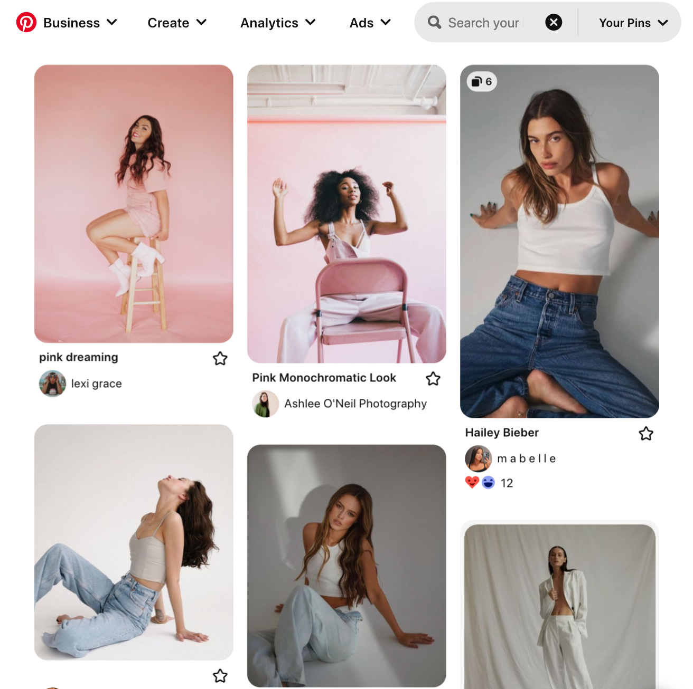
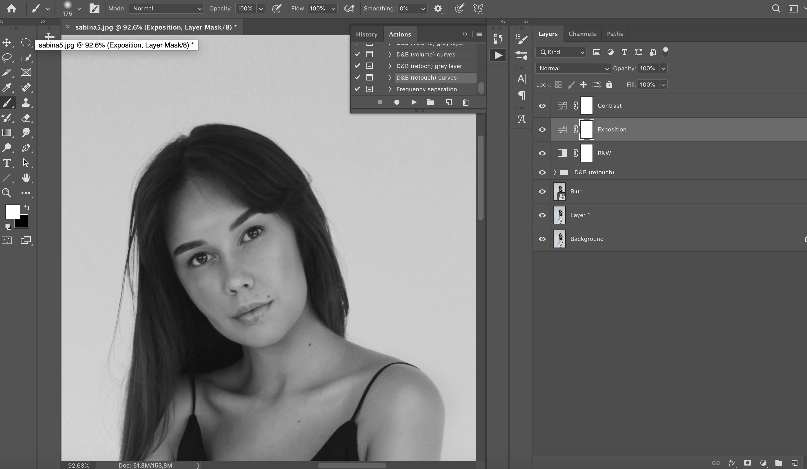

Project 1.
1. Pre-shoot planning:
During the pre-shoot planning phase, I prioritize effective communication with my clients to ensure their vision is understood and incorporated into the photoshoot. Together, we create a reference Pinterest board or album, where we save images that reflect the desired outcome, helping us align our creative direction. Additionally, I take charge of finding suitable locations and meticulously prepare clothing, makeup, and styling for the shoot, as I am experienced in handling these aspects myself. By taking a hands-on approach, I guarantee that every detail is carefully considered, leading to a successful and cohesive photoshoot that captures the essence of my client's vision.
2. Day of the photoshoot:
On the day of the photoshoot, I ensured to arrive early at the location to set up all the equipment and ensure everything was in place. Collaborating closely with my assistant, we maintained a smooth workflow and seamless coordination, with them providing valuable support throughout the day assisting with various tasks. Guiding the model , I directed her to achieve the desired poses that perfectly captured the creative concept.

3. Post-processing:
After the photoshoot, I diligently organized and securely backed up all raw image files on Google Drive, ensuring the preservation of every valuable shot. With a discerning eye, I carefully reviewed and selected the best images, limiting the final collection to a maximum of 10-15 shots that perfectly aligned with the client's vision and preferences. Leveraging my skills and professional training, I conducted comprehensive color correction, retouching, and editing processes. Utilizing Capture One, I initially edited the raw images, and then seamlessly transitioned to Adobe Photoshop for advanced techniques like dodge and burn, frequency separation, skin toning, and any other effects the client requested, such as a smoke filter or other artistic enhancements. Finally, I delivered the final images in the agreed-upon format and within the specified timeframe, ensuring the client received exceptional results that surpassed their expectations.
4. Client feedback and follow-up:
4. After completing the photoshoot, I promptly reached out to the client to request their feedback, ensuring that their expectations were fully met. Welcoming any revisions or additional requests, I handled them with utmost attention and efficiency, striving to deliver precisely what the client envisioned. Expressing sincere gratitude for their collaboration and satisfaction, I valued their input and expressed my commitment to providing a seamless and enjoyable experience. With open communication and a client-centric approach, I ensured that their vision came to life, leaving them with memorable and captivating photographs that surpassed their expectations.
Project 2.
1. Pre-shoot planning:
I placed a high priority on effective communication with my client to ensure a clear understanding of their vision and goals for the photoshoot. Together, we crafted a reference Pinterest board, curating images that truly captured the desired aesthetic and provided valuable inspiration for our creative direction. Additionally, I took the lead in finding suitable locations and meticulously organizing the clothing, makeup, and styling for the shoot, drawing from my own experience in handling these aspects. With a hands-on approach, I made sure every detail was thoughtfully considered, resulting in a successful and cohesive photoshoot that beautifully brought my client's vision to life.

2. Day of the photoshoot:
During the milk bathtub photoshoot, I carefully poured the milky ingredients into the tub to create a captivating effect. The milk was adjusted to look inviting without overpowering the composition. I handled the makeup to enhance the subjects' natural beauty, and wisps of smoke were strategically used to add an ethereal atmosphere that complemented the focus on beauty. Throughout the shoot, I monitored and maintained the milk bath, making adjustments as needed. Guiding the model with expertise, I directed her to achieve expressive poses, resulting in a series of images that showcased enchanting beauty amidst the serene milk bath and wisps of smoke. The

3. Post-processing:
I utilized advanced color grading techniques to enhance the colors and tones, ensuring that the milky backdrop looked pristine and visually appealing. Next, I employed precise adjustments in levels, curves, and contrast to fine-tune the overall composition, making subtle enhancements to highlight the subjects' natural beauty and the captivating wisps of smoke. The final step involved skillful non-destructive retouching using frequency separation and dodge and burn techniques to ensure a flawless and polished look without compromising the subjects' genuine features.

4. Client feedback and follow-up:
I valued my client's feedback throughout the post-processing phase, as direct communication played a key role in ensuring their vision was brought to life. By closely engaging with them, I gathered their thoughts and preferences, enabling me to make precise adjustments that aligned with their expectations. I prioritized their satisfaction and gladly reworked any images as per their requests. However, I was delighted to find that this particular client was immensely pleased with the outcome and expressed no need for further adjustments. Their appreciation for the final result was a testament to our effective collaboration and the successful realization of their creative vision.